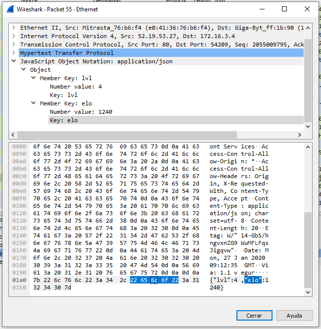

JSON
¿Qué es Json? Demos Ejemplos de Json descargados de APIs públicas. Capturas de Wireshark.o
Hecho por Sebastian Cuesta Molto, Jose María Parrilla y Víctor López.
JSON
JSON es un formato de fichero de texto ligero utilizado para el intercambios de datos.Básicamente JSON describe los datos con una sintaxis dedicada que se usa para identificar y gestionar los datos.
JSON nació como una alternativa a los ficheros de marcas XML, debido a su menor tamaño y su rapidez de lectura. Es posible su uso en cualquier lenguaje de programación, pero su sencillo uso en Javascript ha generado un gran número de seguidores.
Veamos un sencillo ejemplo en el que se puede utilizar JSON. Imaginemos que tenemos una frutería y que queremos obtener el nombre y la cantidad de fruta y verduras que tenemos lo siguiente:

Capturas de Wireshark y JSON
Capturando un paquete con JSON sin encriptar 